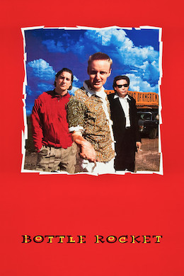

Wes Anderson
1996
91 minutes
TITLE: Bottle Rocket TEXT PLACEHOLDER 172
You're going to rewatch this film in a coffee shop on your laptop. You know you've seen at least the first part of it, but you can't remember if you had watched the entire thing or only part of it. It's going to turn out that you didn't watch very far into it, and what probably happened was someone turned on the first half hour of the film to play in some hipster-ish bar with a television, you paid just enough attention to dismiss the premise, and never tried watching it again with your full attention.
The first time you watched this (and subsequent times you've avoided it), you wrote it off as a typical heist movie but directed by Wes Anderson. Watching a film in a bar with distractions, you tend to miss some of the finer details of what's going on. One minute you can see that two guys are planning some manner of crime, which one seems to have carefully detailed in a notebook. They're doing lots of talking, probably without captions. You certainly aren't getting the fact that the more erratic one had "rescued" his friend from a voluntary psychiatric unit. Every time you look up you're seeing evidence of what you expect to see. The guys are shooting guns. The guys are gathered in some wealthy person's suburban home. The guys are burglarizing someone else's suburban home. The guys are robbing a store. Then you leave the bar and the rest is strictly in your imagination.
How you feel about this film is going to correspond pretty strongly with how you feel about Owen and Luke Wilson and other such actors from that early era. Back when you first saw this film shortly after it came out, it was being heavily scrutinized by a lot of "obnoxious hipsters" for how to dress and act. Many of these, especially the ones you tended to rub shoulders with, were empty shells of people embracing an aesthetic of how they were supposed to look and what they were supposed to like to fit in.
You were fairly aggressively and stubbornly counter-culture in those days, punk enough to look a little weird and like weird stuff but generally drab enough to mostly be ignored. You weren't simply mimicking the behavior to attract a certain sort of friend or girlfriend, and you never fully embraced nor rejected the culture. You ended up in the same spaces with the hipsters because your interests sometimes happened to overlap to liking the same kinds of things and the same kinds of places for different reasons. You were comfortable in dive bars and punk bars drinking cheap beers. The hipsters would go slumming in the places you hung out, greatly amused at the local color. You'd also hang out in places that were more upscale but going for a dive bar aesthetic, but largely devoid of the actual people who would make them into a dive bar. Sometimes this was done very successfully, which made for a pleasant bar to hang out in. They'd be spared the antics of the worst of your friends, who tended to behave themselves more when they wandered into those places and provided some of the authenticity that was so craved.
Many of the "soulless hipsters" of those days were taking cues from the most culturally aware of their friends. They hadn't actually seen any of the films their hippest friends who worked in the cool video store were telling them to see, but they could certainly play mix-and-match when they were picking out clothes to match a popular aesthetic. And many were shallow enough to look down their noses at the normies who hadn't figured this out. As with any subculture, there were endless arguments about actual hipsters versus poseurs. And in a hilarious twist it was almost universally agreed that anyone who was trying to be a hipster was by definition a poseur. And poseurs were almost universally despised, unless of course they were attractive enough in the process to be fuckable and desirable. There's a thin line between looking like you're in a band and being in a band, and many guys are one guitar away from technically being able to claim the latter.
So your first time around watching this film was heavily colored by the douches you knew who were trying to look like people they knew who were trying to look like Luke or Owen Wilson from a Wes Anderson film. And these idiots formed your opinions of these actors more than the actors themselves ever did. You recall one particular bartender (in a later era after you had married and settled down a bit) who consistently dressed like Luke Wilson's character from The Royal Tenenbaums, down to the shades and beard and headband and often literally in tennis clothes. You kept him at arm's length, and you never bothered to find out if he was admired by his peers for this or cruelly-but-rightly mocked behind his back for this or both. He looked as though he had an aggressive girlfriend who was obsessed with the movie and was using him as a living Ken doll and he was just rolling with it because the sex was good. The sight of him alone was enough to keep you from watching any Wes Anderson movie in full for at least another five or six years.
Upon watching this again, you realize that this was a mistake. This is actually a fairly good movie, if a little clumsy and cringey in parts. You're no longer trying to stake a place in an environment where a bunch of poor photocopies of Luke and Owen Wilson and Vince Vaughn and Ben Stiller are charging in like a bunch of rhinos and mucking everything up, which wasn't their fault in the first place.
You wonder what other good films you've missed because of your stubborn contrarianism, which is probably the reason you've decided to go on this particular adventure. You certainly know you still have some of this contrarian streak reserved for current indie films and directors and performers whose cultists are a little too avid for your taste. Read on and keep watching!
Time to choose something different: